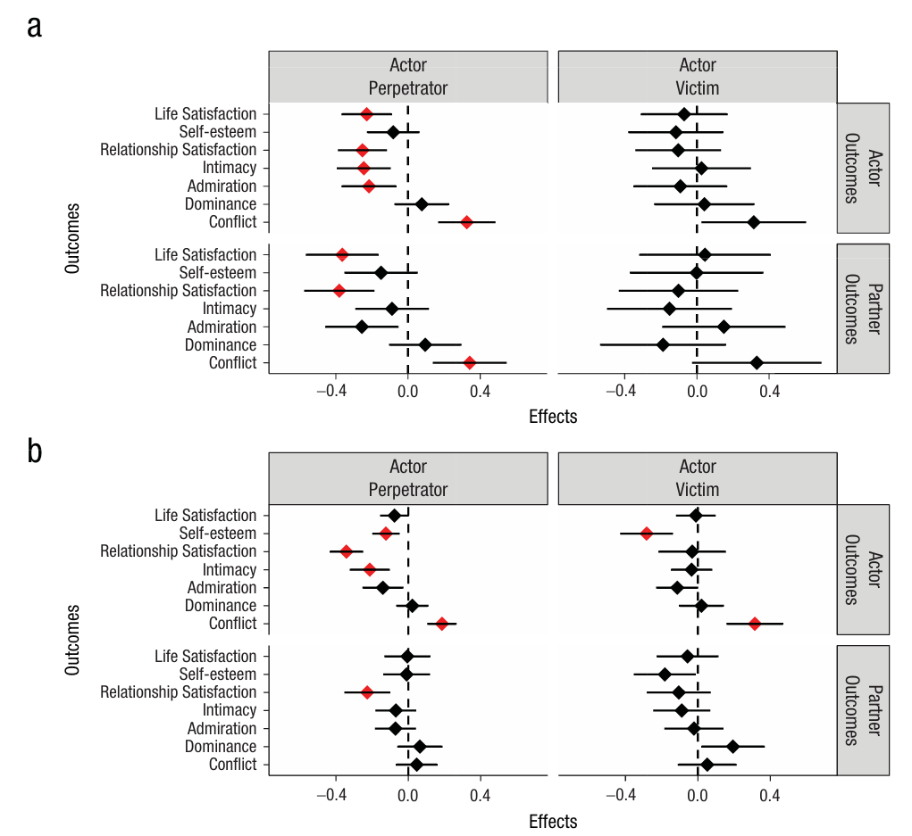
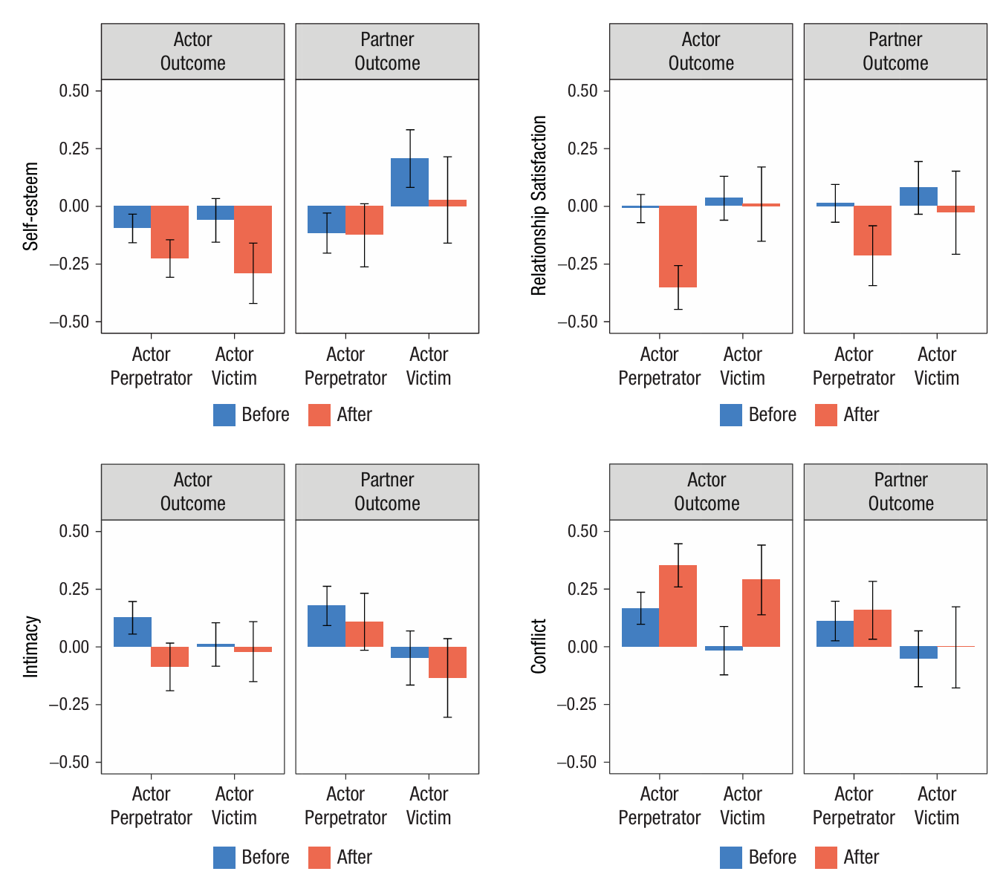
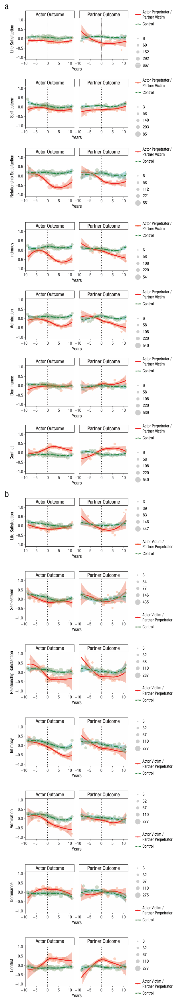
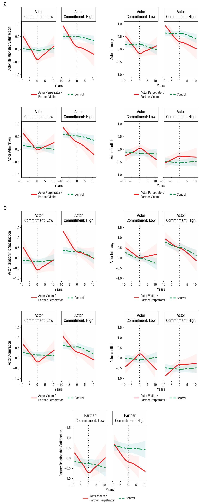

1 引言
- 性不忠（婚外性行为）是关系中的严重问题，和一系列关系功能相关
- 相关不足以证明不忠是关系问题的起点还是后果
- 关系相关理论（如vulnerability-stress-adaptation framework）认为不忠是决定心理困恼和关系不满意的重要因素
- 约会不忠的投资模型和人格心理学中关于重大社会事件的最新研究认为不忠是后果
- 仅有两个纵向实证研究，且结果不一致
- 本研究使用连续12年（平均8年，处在关系中平均5年）的德国全国性大样本数据，使用非连续变化模型（discontinuous change models）解决关于不忠在关系功能中的作用的理论争论
1.1 不忠之后，福祉可能下降
- 实施不忠方：内疚、道德自我形象受损、认知失调、隐瞒不忠的压力、被发现后的关系紧张
- 遭遇不忠方：破坏了信任，可能引发愤怒、自尊下降、重性抑郁发作，即使不忠没被发现，但对方的冷落也会造成影响
1.2 福祉下降可能先于不忠
- 不忠的投资模型：个体对当前关系的承诺是决定其是否会实施不忠的重要因素
- 不幸福的人较少被选择为伙伴、伴侣
1.3 本研究
- 全国代表性的德国成年人样本，最长追踪12年，平均追踪8年，每段目标关系平均追踪5年
- 实施不忠和遭遇不忠两个视角
- 不连续变化模型，追踪经历不忠者的福祉变化
- 将变化与通过倾向得分匹配（propensity-score matching）建立的对照组进行比较，对照组整个研究期间均未报告不忠
- 利用伴侣双方的数据，考察不忠前后双方的福祉如何变化
- 同时追踪关系福祉（如关系满意度）和个人福祉（如生活满意度）
1.4 开放研究说明
- 数据来自 https://www.pairfam.de/
- 预注册 https://osf.io/vmjk5
- 分析代码 https://osf.io/fqm84/
- 伦理审核通过
2 方法
- Panel Analysis of Intimate Relationships and Family Dynamics
- 2008年开始，一年一次，1971-1973、1981-1983、1991-1993三个出生队列的核心受访者（12000+），以及他们的伴侣、父母、子女
- 核心受访者和递补样本（满16岁子女）回答了不忠行为、关系满意度和心理福祉的自称量表
- 本研究使用了2008年到2020年，共12波的数据，，每名个体平均约8年，每对伴侣平均约5年 (表 1)
Perpetrator infidelity | Victim infidelity | |||||||||
|---|---|---|---|---|---|---|---|---|---|---|
Actor perpetrator | Actor control | Actor victim | Actor control | |||||||
Used in propensity-score matching | M | SD | M | SD | p | M | SD | M | SD | p |
Actor agea | 25.94 | 8.66 | 25.98 | 8.48 | n.s. | 25.84 | 8.21 | 25.61 | 8.33 | n.s. |
Partner agea | 28.64 | 9.98 | 28.68 | 9.03 | n.s. | 27.98 | 8.64 | 28.09 | 8.81 | n.s. |
Actor male | 51% | 49% | n.s. | 33% | 34% | n.s. | ||||
Actor gay male/lesbiana | 2% | 1% | n.s. | 2% | 2% | n.s. | ||||
Marriedb | 29% | 30% | n.s. | 28% | 28% | n.s. | ||||
Live togetherb | 47% | 49% | n.s. | 47% | 46% | n.s. | ||||
Number of joint childrenb | 0.48 | 0.68 | 0.50 | 0.75 | n.s. | 0.52 | 0.72 | 0.54 | 0.75 | n.s. |
Relationship duration (months)b | 53.73 | 95.98 | 53.55 | 98.94 | n.s. | 51.22 | 85.61 | 51.55 | 95.35 | n.s. |
Number of assessments of the target relationship before the event | 2.42 | 2.18 | 2.19 | 1.97 | ||||||
Number of assessments of the target relationship after the eventc | 2.55 | 2.87 | 2.43 | 2.77 | ||||||
Overall number of assessments before the event | 3.45 | 2.70 | 3.23 | 2.68 | ||||||
Overall number of assessments after the eventc | 4.47 | 3.34 | 4.39 | 3.45 | ||||||
Separation | 36% | 22% | < .001 | 36% | 25% | < .001 | ||||
New partner | 75% | 52% | < .001 | 57% | 50% | n.s. | ||||
Actor life satisfactiond | 3.93 | 0.56 | 4.08 | 0.51 | < .001 | 3.88 | 0.62 | 4.04 | 0.53 | < .001 |
Actor self-esteemd | 3.81 | 0.70 | 3.97 | 0.66 | < .001 | 3.69 | 0.77 | 3.91 | 0.68 | < .001 |
Actor relationship satisfactiond | 3.73 | 0.74 | 4.15 | 0.62 | < .001 | 3.72 | 0.86 | 4.10 | 0.66 | < .001 |
Actor intimacyd | 3.57 | 0.81 | 3.90 | 0.68 | < .001 | 3.75 | 0.75 | 3.92 | 0.71 | < .05 |
Actor admirationd | 3.67 | 0.73 | 3.89 | 0.66 | < .001 | 3.55 | 0.78 | 3.88 | 0.63 | < .001 |
Actor dominanced | 3.02 | 0.60 | 3.00 | 0.55 | n.s. | 3.17 | 0.62 | 2.98 | 0.59 | < .001 |
Actor conflictd | 2.79 | 0.66 | 2.50 | 0.64 | < .001 | 2.89 | 0.64 | 2.54 | 0.67 | < .001 |
Partner life satisfactiond | 3.85 | 0.68 | 4.04 | 0.61 | < .001 | 3.86 | 0.68 | 3.97 | 0.71 | n.s. |
Partner self-esteemd | 3.75 | 0.82 | 3.94 | 0.77 | < .001 | 3.79 | 0.82 | 3.88 | 0.78 | n.s. |
Partner relationship satisfactiond | 3.92 | 0.73 | 4.18 | 0.62 | < .001 | 3.99 | 0.63 | 4.20 | 0.64 | < .001 |
Partner intimacyd | 3.68 | 0.71 | 3.78 | 0.73 | < .05 | 3.61 | 0.76 | 3.71 | 0.70 | n.s. |
Partner admirationd | 3.42 | 0.73 | 3.62 | 0.72 | < .01 | 3.55 | 0.72 | 3.63 | 0.69 | n.s. |
Partner dominanced | 3.14 | 0.58 | 3.03 | 0.59 | < .01 | 3.07 | 0.53 | 3.02 | 0.61 | n.s. |
Partner conflictd | 2.66 | 0.61 | 2.49 | 0.60 | < .001 | 2.78 | 0.63 | 2.49 | 0.64 | < .001 |
Actor commitmentd | 3.70 | 0.93 | 4.07 | 0.77 | < .001 | 3.78 | 0.95 | 4.05 | 0.78 | < .001 |
Partner commitmentd | 3.91 | 0.77 | 4.13 | 0.67 | < .001 | 3.99 | 0.77 | 4.17 | 0.65 | < .01 |
Note: Separation: 1 = relationship ended in separation, 0 = relationship continues (participants were asked whether the relationship they reported during the last wave was still ongoing; this question was not included in Waves 1 and 2). New partner: percentage of participants (among the ones who separated) who formed a new relationship after separation. p values refer to a t test (in the case of continuous outcomes) or chi-square test (in the case of binary outcomes). | ||||||||||
aThese are values at study onset. bThese are values at relationship onset. cThis includes the year of the event. dThese are average values across the years. | ||||||||||
2.1 被试
- 14216有伴侣的被试，见 表 1
- 不忠样本
- 报告自己单方面不忠、报告伴侣单方面不忠、报告自己和伴侣都不忠
- 都不忠人数太少（111人），仅作为敏感性分析
- 剔除同一段关系中，不同波次报告不同类型不忠的被试（43人）
- 仅关注第一次报告不忠事件的情况
- 实施不忠者81%仅报告一次不忠，且最多报告过4次（0.3%）
- 遭受不忠者91%仅报告一次不忠，且最多报告过6次（0.3%）
- actor有947人，609人实施不忠，338人遭受不忠
- partner有860-864人（部分没完成对应的因变量内容），559-562实施不忠的伴侣，301-302遭遇不忠的伴侣
- 报告自己单方面不忠、报告伴侣单方面不忠、报告自己和伴侣都不忠
- 对照样本
- 使用倾向得分匹配使对照样本尽可能和不忠样本相似
- 根据个体基线特征计算倾向得分，用于反应经历某一事件的可能性，然后匹配一名倾向得分类似的但没经历某一事件的被试
- 在未经历不忠事件的伴侣被试中，使用nearest neighbor propensity-score-matching procedure，为每个actor匹配2个无不忠经历被试
- 报告者和伴侣的年龄、性别、教育程度、就业状态，报告者的收入、婚姻状态、同居状态，研究开始前关系持续时长，双方共同子女数量，参加的波次（1-12）
MatchIn包完成匹配
- 使用倾向得分匹配使对照样本尽可能和不忠样本相似
- 不忠样本
2.2 测量
- 不忠：Did you or your partner have an extra-marital affair during the past year? (1 = Yes, I did; 2 = Yes, my partner did; 3 = Yes, both my partner and I did; 4 = No)
- 福祉：actor和partner均填写
- 生活满意度：All in all, how satisfied are you with your life at the moment? （0 = very dissatisfied, 10 = very satisfied，转换为1-5）
- 自尊： three-item self-esteem scale
- 关系满意度：Relationship Assessment Scale中的2题（使用相关显著证明效度）
- [Name of current partner] can fulfill my needs very well
- All in all, how satisfied are you with your relationship?
- Network of Relationships Inventory四个分量表，每个量表2题
- 亲密
- 感知被伴侣欣赏
- 感知伴侣支配
- 冲突
- 控制关系是否持续、是否有恋爱伴侣
2.3 分析策略
- 被试作为随机效应；匹配组作为随机效应
- 不连续变化模型，以年为单位对事件编码，从第5波开始，不忠事件两年测一次，选择中点作为编码
- 针对不忠事件，使用以下编码：
- event selection：是、否（1、0）至少经历过一次不忠事件
- post-event baseline change：事件前取0，事件后取1
- linear anticipation：事件前取负值（如：-3，-2，-1），事件发生及之后取0
- linear socialization：事件前和事件发生取0，事件后取正值（1,2,3）
- 对照组这些变量都取0
- 年龄及其二次项，报告者性别、性取向、是否已婚、是否同居、不忠事件次数、第几次参加测量
- 两种模型，第一种linear anticipation和linear socialization纳入线性项，第二种纳入线性和二次，卡方比较最佳模型
- 生活和关系满意度是主要结构变量，自尊、亲密、感知被伴侣欣赏、感知伴侣支配、冲突是次要结果变量
- \(p=.10\) 作为起始阈值，两个结果变量和4个重要预测变量（不忠事件的编码）， \(p<.0125(.10\div 2\div 4)\) 为主要结果变量阈值。同理，次要结果变量阈值为 \(p<.005(.10\div 5\div 4)\)
3 结果
- 零阶相关表明：报告过不忠事件的被试，也报告了较低的个人福祉和关系福祉，较多的关系冲突
| Actor outcomes | |||||||||||||||||||||
|---|---|---|---|---|---|---|---|---|---|---|---|---|---|---|---|---|---|---|---|---|---|
| Life satisfaction | Self-esteem | Relationship satisfaction | Intimacy | Admiration | Dominance | Conflict | |||||||||||||||
| b | 95% CI | p | b | 95% CI | p | b | 95% CI | p | b | 95% CI | p | b | 95% CI | p | b | 95% CI | p | b | 95% CI | p | |
| Intercept | −0.36 | −0.44, −0.28 | < .001 | −0.09 | −0.17, −0.01 | .025 | 0.17 | 0.09, 0.25 | < .001 | 0.43 | 0.34, 0.52 | < .001 | 0.35 | 0.26, 0.44 | < .001 | −0.30 | −0.39, −0.21 | < .001 | −0.25 | −0.34, −0.16 | < .001 |
| Testing | −0.00 | −0.01, 0.01 | .936 | −0.02 | −0.02, −0.01 | < .001 | −0.01 | −0.02, −0.00 | .022 | −0.00 | −0.01, 0.01 | .500 | −0.02 | −0.03, −0.01 | < .001 | −0.01 | −0.02, −0.00 | .031 | 0.01 | 0.00, 0.02 | .029 |
| Selection | −0.23 | −0.36, −0.09 | .001 | −0.08 | −0.22, 0.06 | .252 | −0.25 | −0.38, −0.12 | < .001 | −0.25 | −0.39, −0.10 | .001 | −0.22 | −0.36, −0.07 | .004 | 0.08 | −0.07, 0.22 | .307 | 0.33 | 0.17, 0.48 | < .001 |
| Anticipation: linear | −0.01 | −0.02, 0.01 | .328 | 0.01 | −0.01, 0.02 | .404 | −0.10 | −0.12, −0.07 | < .001 | −8.95 | −11.84, −6.06 | < .001 | −8.14 | −11.08, −5.20 | < .001 | 0.01 | −0.01, 0.03 | .449 | 0.03 | 0.01, 0.05 | .001 |
| Anticipation: quadratic | −5.30 | −7.56, −3.03 | < .001 | −2.81 | −5.11, −0.51 | .017 | |||||||||||||||
| Post-event baseline change | −0.08 | −0.15, −0.00 | .041 | −0.12 | −0.19, −0.05 | .001 | −0.34 | −0.43, −0.25 | < .001 | −0.21 | −0.32, −0.11 | < .001 | −0.14 | −0.25, −0.03 | .010 | 0.02 | −0.06, 0.11 | .605 | 0.19 | 0.11, 0.26 | < .001 |
| Socialization: linear | 0.02 | 0.01, 0.04 | .001 | 0.02 | 0.01, 0.04 | < .001 | 0.03 | 0.01, 0.05 | .001 | 4.72 | 0.12, 9.32 | .044 | 3.93 | −0.75, 8.61 | .100 | −0.00 | −0.02, 0.02 | .859 | −0.02 | −0.04, −0.01 | .010 |
| Socialization: quadratic | −2.01 | −4.89, 0.87 | .171 | −1.91 | −4.83, 1.02 | .201 | |||||||||||||||
| Gender | 0.04 | −0.03, 0.11 | .283 | 0.34 | 0.26, 0.41 | < .001 | 0.07 | 0.01, 0.14 | .035 | −0.22 | −0.30, −0.14 | < .001 | 0.09 | 0.01, 0.17 | .024 | 0.40 | 0.32, 0.48 | < .001 | −0.15 | −0.24, −0.07 | < .001 |
| Sexual orientation | 0.07 | −0.12, 0.25 | .461 | −0.06 | −0.24, 0.12 | .537 | 0.19 | −0.12, 0.50 | .225 | 0.30 | −0.04, 0.64 | .079 | 0.29 | −0.06, 0.64 | .102 | 0.08 | −0.27, 0.43 | .671 | −0.25 | −0.62, 0.12 | .181 |
| Age | −0.02 | −0.02, −0.02 | < .001 | 0.00 | −0.00, 0.00 | .997 | −0.02 | −0.02, −0.01 | < .001 | −0.02 | −0.03, −0.02 | < .001 | −0.01 | −0.02, −0.01 | < .001 | −0.00 | −0.01, 0.00 | .618 | −0.01 | −0.01, −0.00 | .006 |
| Age, squared | 0.00 | 0.00, 0.00 | < .001 | 0.00 | 0.00, 0.00 | < .001 | 0.00 | −0.00, 0.00 | .130 | 0.00 | −0.00, 0.00 | .059 | 0.00 | 0.00, 0.00 | < .001 | −0.00 | −0.00, 0.00 | .407 | −0.00 | −0.00, −0.00 | .012 |
| Marital status | 0.08 | 0.03, 0.14 | .003 | −0.05 | −0.10, 0.00 | .060 | −0.01 | −0.07, 0.06 | .827 | 0.01 | −0.05, 0.07 | .851 | −0.12 | −0.18, −0.06 | < .001 | 0.09 | 0.03, 0.16 | .006 | 0.06 | −0.00, 0.12 | .065 |
| Coresident status | 0.08 | 0.03, 0.12 | .002 | 0.00 | −0.05, 0.05 | .963 | −0.00 | −0.07, 0.07 | .993 | −0.13 | −0.19, −0.07 | < .001 | −0.15 | −0.21, −0.09 | < .001 | 0.14 | 0.07, 0.20 | < .001 | 0.27 | 0.21, 0.34 | < .001 |
| Relationship status | 0.31 | 0.26, 0.35 | < .001 | 0.06 | 0.02, 0.10 | .005 | |||||||||||||||
| Separation status | 0.07 | 0.01, 0.13 | .025 | −0.03 | −0.09, 0.03 | .276 | |||||||||||||||
| Number of infidelity waves | −0.00 | −0.08, 0.08 | .989 | −0.06 | −0.14, 0.02 | .171 | −0.15 | −0.23, −0.08 | < .001 | −0.13 | −0.21, −0.04 | .003 | −0.08 | −0.17, 0.00 | .057 | −0.05 | −0.13, 0.04 | .287 | 0.04 | −0.05, 0.13 | .398 |
| Number of individuals | 1,681 | 1,674 | 1,738 | 1,730 | 1,730 | 1,728 | 1,727 | ||||||||||||||
| Number of individuals with event | 609 | 609 | 609 | 609 | 609 | 609 | 609 | ||||||||||||||
| Number of observations | 13,261 | 13,070 | 8,590 | 8,491 | 8,491 | 8,483 | 8,486 | ||||||||||||||
| Partner outcomes | |||||||||||||||||||||
|---|---|---|---|---|---|---|---|---|---|---|---|---|---|---|---|---|---|---|---|---|---|
| Life satisfaction | Self-esteem | Relationship satisfaction | Intimacy | Admiration | Dominance | Conflict | |||||||||||||||
| b | 95% CI | p | b | 95% CI | p | b | 95% CI | p | b | 95% CI | p | b | 95% CI | p | b | 95% CI | p | b | 95% CI | p | |
| Intercept | −0.03 | −0.17, 0.10 | .641 | 0.14 | 0.01, 0.28 | .038 | 0.09 | −0.04, 0.23 | .176 | −0.06 | −0.19, 0.07 | .364 | 0.42 | 0.29, 0.55 | < .001 | 0.03 | −0.11, 0.16 | .684 | −0.34 | −0.48, −0.21 | < .001 |
| Testing | −0.01 | −0.02, 0.00 | .183 | −0.00 | −0.01, 0.01 | .650 | −0.02 | −0.03, −0.00 | .006 | 0.00 | −0.01, 0.01 | .602 | −0.01 | −0.02, −0.00 | .018 | 0.00 | −0.01, 0.01 | .718 | 0.01 | 0.00, 0.02 | .044 |
| Selection | −0.36 | −0.56, −0.17 | < .001 | −0.15 | −0.35, 0.05 | .138 | −0.38 | −0.57, −0.19 | < .001 | −0.09 | −0.29, 0.11 | .381 | −0.26 | −0.45, −0.06 | .011 | 0.10 | −0.10, 0.29 | .338 | 0.34 | 0.14, 0.54 | .001 |
| Anticipation: linear | −0.08 | −0.11, −0.05 | < .001 | 0.00 | −0.03, 0.03 | .984 | −0.08 | −0.11, −0.05 | < .001 | −0.06 | −0.09, −0.03 | < .001 | −0.08 | −0.11, −0.05 | < .001 | 0.04 | 0.01, 0.07 | .016 | 0.09 | 0.06, 0.12 | < .001 |
| Anticipation: quadratic | |||||||||||||||||||||
| Post-event baseline change | −0.01 | −0.13, 0.12 | .934 | −0.01 | −0.13, 0.11 | .880 | −0.23 | −0.35, −0.11 | < .001 | −0.07 | −0.18, 0.04 | .209 | −0.07 | −0.18, 0.04 | .196 | 0.06 | −0.06, 0.18 | .295 | 0.05 | −0.06, 0.16 | .408 |
| Socialization: linear | 0.03 | 0.00, 0.05 | .030 | 0.01 | −0.02, 0.03 | .516 | 0.03 | 0.00, 0.05 | .023 | −0.01 | −0.03, 0.01 | .283 | −0.01 | −0.03, 0.02 | .630 | −0.01 | −0.03, 0.01 | .412 | −0.02 | −0.04, 0.01 | .152 |
| Socialization: quadratic | |||||||||||||||||||||
| Gender | 0.06 | −0.05, 0.17 | .272 | −0.32 | −0.43, −0.21 | < .001 | −0.07 | −0.17, 0.04 | .211 | 0.35 | 0.24, 0.46 | < .001 | −0.12 | −0.23, −0.01 | .038 | −0.29 | −0.40, −0.18 | < .001 | 0.12 | 0.01, 0.23 | .036 |
| Sexual orientation | −0.31 | −0.79, 0.17 | .201 | −0.77 | −1.26, −0.29 | .002 | 0.20 | −0.26, 0.66 | .400 | −0.08 | −0.58, 0.41 | .736 | 0.52 | 0.02, 1.01 | .040 | −0.65 | −1.13, −0.16 | .009 | −0.17 | −0.66, 0.33 | .512 |
| Age | −0.02 | −0.02, −0.01 | < .001 | −0.00 | −0.01, 0.01 | .604 | −0.02 | −0.03, −0.01 | < .001 | −0.02 | −0.03, −0.02 | < .001 | −0.01 | −0.02, −0.00 | .005 | −0.01 | −0.01, 0.00 | .159 | −0.01 | −0.01, 0.00 | .107 |
| Age, squared | 0.00 | −0.00, 0.00 | .247 | 0.00 | 0.00, 0.00 | .039 | 0.00 | 0.00, 0.00 | .012 | 0.00 | −0.00, 0.00 | .136 | 0.00 | 0.00, 0.00 | .012 | 0.00 | −0.00, 0.00 | .416 | −0.00 | −0.00, 0.00 | .804 |
| Marital status | −0.00 | −0.09, 0.09 | .972 | 0.03 | −0.05, 0.12 | .450 | 0.02 | −0.06, 0.11 | .570 | −0.02 | −0.10, 0.06 | .697 | −0.15 | −0.23, −0.07 | < .001 | 0.07 | −0.01, 0.16 | .101 | 0.10 | 0.02, 0.18 | .018 |
| Coresident status | 0.14 | 0.03, 0.25 | .012 | 0.07 | −0.04, 0.18 | .199 | 0.14 | 0.03, 0.24 | .012 | 0.01 | −0.09, 0.11 | .817 | −0.13 | −0.23, −0.03 | .010 | 0.04 | −0.07, 0.14 | .495 | 0.16 | 0.06, 0.26 | .002 |
| Relationship status | |||||||||||||||||||||
| Separation status | |||||||||||||||||||||
| Number of infidelity waves | −0.01 | −0.11, 0.10 | .923 | −0.04 | −0.15, 0.07 | .454 | 0.03 | −0.07, 0.14 | .505 | −0.05 | −0.16, 0.06 | .382 | −0.03 | −0.13, 0.08 | .639 | 0.06 | −0.05, 0.16 | .289 | −0.01 | −0.12, 0.10 | .849 |
| Number of individuals | 968 | 968 | 971 | 962 | 961 | 959 | 962 | ||||||||||||||
| Number of individuals with event | 561 | 561 | 562 | 560 | 560 | 559 | 560 | ||||||||||||||
| Number of observations | 4,548 | 3,797 | 4,569 | 4,496 | 4,494 | 4,489 | 4,493 | ||||||||||||||
| Actor outcomes | |||||||||||||||||||||
|---|---|---|---|---|---|---|---|---|---|---|---|---|---|---|---|---|---|---|---|---|---|
| Life satisfaction | Self-esteem | Relationship satisfaction | Intimacy | Admiration | Dominance | Conflict | |||||||||||||||
| b | 95% CI | p | b | 95% CI | p | b | 95% CI | p | b | 95% CI | p | b | 95% CI | p | b | 95% CI | p | b | 95% CI | p | |
| Intercept | −0.34 | −0.44, −0.25 | < .001 | −0.04 | −0.15, 0.06 | .437 | 0.04 | −0.08, 0.15 | .515 | 0.30 | 0.19, 0.42 | < .001 | 0.30 | 0.19, 0.41 | < .001 | −0.26 | −0.38, −0.15 | < .001 | −0.24 | −0.35, −0.12 | < .001 |
| Testing | −0.00 | −0.01, 0.01 | .741 | −0.01 | −0.02, 0.00 | .167 | 0.00 | −0.01, 0.02 | .511 | −0.01 | −0.02, 0.00 | .053 | −0.01 | −0.02, −0.00 | .025 | 0.00 | −0.01, 0.01 | .723 | 0.01 | −0.00, 0.02 | .083 |
| Selection | −0.07 | −0.31, 0.16 | .556 | −0.12 | −0.37, 0.14 | .376 | −0.10 | −0.34, 0.13 | .380 | 0.03 | −0.24, 0.29 | .854 | −0.09 | −0.35, 0.16 | .479 | 0.04 | −0.23, 0.31 | .767 | 0.32 | 0.03, 0.60 | .030 |
| Anticipation: linear | −0.03 | −0.05, −0.00 | .019 | −3.38 | −5.80, −0.95 | .006 | −15.11 | −18.85, −11.36 | < .001 | −0.04 | −0.07, −0.01 | .009 | −0.09 | −0.12, −0.06 | < .001 | 0.01 | −0.03, 0.04 | .613 | 7.75 | 4.53, 10.97 | < .001 |
| Anticipation: quadratic | 1.38 | −0.33, 3.08 | .113 | −6.33 | −9.26, −3.41 | < .001 | 1.67 | −0.76, 4.09 | .177 | ||||||||||||
| Post-event baseline change | −0.01 | −0.11, 0.09 | .837 | −0.28 | −0.42, −0.14 | < .001 | −0.03 | −0.21, 0.15 | .736 | −0.03 | −0.14, 0.07 | .533 | −0.11 | −0.23, −0.00 | .044 | 0.02 | −0.10, 0.14 | .742 | 0.32 | 0.16, 0.47 | < .001 |
| Socialization: linear | 0.03 | 0.01, 0.05 | .002 | 7.75 | 3.87, 11.63 | < .001 | 4.16 | −1.41, 9.73 | .144 | 0.01 | −0.01, 0.04 | .253 | 0.03 | 0.01, 0.06 | .008 | −0.02 | −0.05, 0.00 | .069 | −10.42 | −15.10, −5.73 | < .001 |
| Socialization: quadratic | −3.66 | −6.16, −1.17 | .004 | −1.32 | −5.32, 2.67 | .516 | 3.80 | 0.53, 7.07 | .023 | ||||||||||||
| Gender | 0.06 | −0.04, 0.16 | .245 | 0.36 | 0.26, 0.47 | < .001 | 0.09 | −0.01, 0.19 | .067 | −0.20 | −0.31, −0.08 | .001 | 0.07 | −0.04, 0.18 | .198 | 0.42 | 0.31, 0.54 | < .001 | −0.12 | −0.24, 0.00 | .052 |
| Sexual orientation | 0.00 | −0.21, 0.22 | .987 | −0.31 | −0.52, −0.09 | .005 | 0.22 | −0.12, 0.57 | .204 | 0.16 | −0.23, 0.55 | .424 | 0.35 | −0.02, 0.73 | .064 | 0.42 | 0.02, 0.82 | .041 | −0.03 | −0.45, 0.38 | .870 |
| Age | −0.02 | −0.03, −0.02 | < .001 | −0.00 | −0.01, 0.00 | .297 | −0.03 | −0.03, −0.02 | < .001 | −0.03 | −0.03, −0.02 | < .001 | −0.02 | −0.03, −0.01 | < .001 | −0.00 | −0.01, 0.01 | .683 | 0.00 | −0.01, 0.01 | .561 |
| Age, squared | 0.00 | 0.00, 0.00 | < .001 | 0.00 | 0.00, 0.00 | .009 | 0.00 | 0.00, 0.00 | .048 | 0.00 | −0.00, 0.00 | .885 | 0.00 | 0.00, 0.00 | .012 | −0.00 | −0.00, 0.00 | .303 | −0.00 | −0.00, −0.00 | .001 |
| Marital status | 0.14 | 0.06, 0.22 | .001 | 0.02 | −0.06, 0.10 | .665 | 0.05 | −0.04, 0.15 | .291 | −0.02 | −0.11, 0.07 | .607 | −0.14 | −0.23, −0.05 | .003 | 0.05 | −0.05, 0.14 | .352 | −0.01 | −0.10, 0.08 | .867 |
| Coresident status | 0.14 | 0.07, 0.21 | < .001 | 0.01 | −0.06, 0.08 | .804 | 0.10 | 0.01, 0.20 | .037 | −0.13 | −0.22, −0.04 | .004 | −0.11 | −0.20, −0.02 | .013 | 0.01 | −0.08, 0.10 | .826 | 0.15 | 0.06, 0.24 | .001 |
| Relationship status | 0.23 | 0.17, 0.29 | < .001 | 0.05 | −0.01, 0.11 | .105 | |||||||||||||||
| Separation status | −0.01 | −0.09, 0.07 | .895 | −0.04 | −0.12, 0.04 | .320 | |||||||||||||||
| Number of infidelity waves | −0.20 | −0.38, −0.02 | .033 | −0.08 | −0.27, 0.12 | .452 | −0.37 | −0.54, −0.20 | < .001 | −0.25 | −0.46, −0.04 | .019 | −0.30 | −0.50, −0.11 | .003 | 0.23 | 0.02, 0.44 | .035 | 0.14 | −0.09, 0.36 | .230 |
| Number of individuals | 941 | 937 | 976 | 969 | 969 | 966 | 969 | ||||||||||||||
| Number of individuals with event | 338 | 338 | 338 | 338 | 338 | 338 | 338 | ||||||||||||||
| Number of observations | 7,041 | 6,942 | 4,527 | 4,477 | 4,476 | 4,463 | 4,473 | ||||||||||||||
| Partner outcomes | |||||||||||||||||||||
|---|---|---|---|---|---|---|---|---|---|---|---|---|---|---|---|---|---|---|---|---|---|
| Life satisfaction | Self-esteem | Relationship satisfaction | Intimacy | Admiration | Dominance | Conflict | |||||||||||||||
| b | 95% CI | p | b | 95% CI | p | b | 95% CI | p | b | 95% CI | p | b | 95% CI | p | b | 95% CI | p | b | 95% CI | p | |
| Intercept | −0.27 | −0.46, −0.09 | .004 | −0.06 | −0.24, 0.12 | .500 | −0.01 | −0.18, 0.17 | .946 | −0.09 | −0.26, 0.08 | .305 | 0.19 | 0.02, 0.37 | .030 | 0.06 | −0.12, 0.24 | .532 | −0.24 | −0.42, −0.06 | .008 |
| Testing | 0.00 | −0.01, 0.02 | .603 | 0.00 | −0.01, 0.02 | .760 | −0.00 | −0.02, 0.01 | .600 | 0.00 | −0.01, 0.02 | .871 | −0.01 | −0.03, 0.01 | .182 | −0.00 | −0.02, 0.01 | .642 | 0.01 | −0.01, 0.03 | .255 |
| Selection | 0.04 | −0.31, 0.40 | .808 | −0.00 | −0.37, 0.36 | .992 | −0.10 | −0.43, 0.22 | .537 | −0.15 | −0.49, 0.19 | .381 | 0.15 | −0.19, 0.49 | .385 | −0.19 | −0.53, 0.16 | .284 | 0.33 | −0.02, 0.68 | .065 |
| Anticipation: linear | −0.04 | −0.09, −0.00 | .039 | 0.00 | −0.04, 0.05 | .867 | −0.09 | −0.14, −0.05 | < .001 | −0.05 | −0.09, −0.01 | .015 | −0.04 | −0.08, 0.00 | .051 | −0.01 | −0.06, 0.03 | .566 | 0.07 | 0.03, 0.11 | .001 |
| Anticipation: quadratic | |||||||||||||||||||||
| Post-event baseline change | −0.06 | −0.22, 0.11 | .498 | −0.18 | −0.35, −0.02 | .031 | −0.11 | −0.28, 0.07 | .229 | −0.09 | −0.24, 0.06 | .251 | −0.02 | −0.18, 0.14 | .790 | 0.19 | 0.02, 0.36 | .026 | 0.05 | −0.10, 0.21 | .516 |
| Socialization: linear | 0.02 | −0.02, 0.05 | .307 | 0.01 | −0.02, 0.05 | .524 | 0.03 | −0.00, 0.06 | .090 | 0.03 | 0.00, 0.06 | .040 | 0.02 | −0.01, 0.05 | .166 | −0.01 | −0.05, 0.02 | .477 | −0.03 | −0.06, 0.00 | .053 |
| Socialization: quadratic | |||||||||||||||||||||
| Gender | −0.07 | −0.23, 0.09 | .418 | −0.34 | −0.50, −0.18 | < .001 | −0.10 | −0.25, 0.04 | .157 | 0.21 | 0.06, 0.36 | .006 | −0.32 | −0.47, −0.17 | < .001 | −0.26 | −0.41, −0.11 | .001 | 0.15 | −0.01, 0.31 | .059 |
| Sexual orientation | −0.40 | −1.02, 0.22 | .207 | −0.45 | −1.07, 0.17 | .151 | 0.29 | −0.28, 0.86 | .314 | 0.39 | −0.20, 0.99 | .195 | 0.83 | 0.24, 1.42 | .006 | −0.29 | −0.90, 0.31 | .343 | −0.48 | −1.10, 0.13 | .126 |
| Age | −0.02 | −0.03, −0.01 | < .001 | −0.00 | −0.01, 0.01 | 1.000 | −0.03 | −0.04, −0.02 | < .001 | −0.03 | −0.04, −0.02 | < .001 | −0.02 | −0.03, −0.00 | .004 | −0.01 | −0.02, 0.00 | .123 | −0.00 | −0.02, 0.01 | .467 |
| Age, squared | 0.00 | 0.00, 0.00 | .021 | 0.00 | −0.00, 0.00 | .234 | 0.00 | 0.00, 0.00 | .012 | 0.00 | 0.00, 0.00 | < .001 | 0.00 | 0.00, 0.00 | .010 | −0.00 | −0.00, 0.00 | .812 | −0.00 | −0.00, −0.00 | .039 |
| Marital status | 0.20 | 0.07, 0.32 | .002 | 0.10 | −0.03, 0.22 | .118 | 0.12 | −0.01, 0.24 | .066 | 0.08 | −0.03, 0.20 | .162 | 0.01 | −0.11, 0.13 | .917 | 0.09 | −0.04, 0.21 | .188 | −0.14 | −0.26, −0.02 | .023 |
| Coresident status | 0.21 | 0.06, 0.37 | .007 | 0.11 | −0.04, 0.26 | .152 | 0.08 | −0.07, 0.24 | .304 | −0.02 | −0.16, 0.12 | .767 | −0.03 | −0.18, 0.11 | .656 | −0.01 | −0.17, 0.15 | .891 | 0.27 | 0.12, 0.42 | < .001 |
| Relationship status | |||||||||||||||||||||
| Separation status | |||||||||||||||||||||
| Number of infidelity waves | −0.20 | −0.47, 0.07 | .148 | −0.00 | −0.28, 0.28 | .995 | −0.18 | −0.42, 0.06 | .141 | −0.03 | −0.28, 0.23 | .840 | −0.28 | −0.53, −0.03 | .031 | 0.13 | −0.12, 0.39 | .305 | 0.09 | −0.18, 0.36 | .508 |
| Number of individuals | 522 | 526 | 527 | 527 | 526 | 525 | 527 | ||||||||||||||
| Number of individuals with event | 302 | 302 | 302 | 302 | 301 | 301 | 302 | ||||||||||||||
| Number of observations | 2,377 | 2,006 | 2,394 | 2,357 | 2,354 | 2,350 | 2,356 | ||||||||||||||

3.1 event selection
3.2 post-event baseline change

- 见 图 1 b 和 图 2
- 实施不忠者（ 表 2 ）
- 事件发生后，自己的自尊、关系满意度、亲密程度基线较低，关系冲突基线较高
- 事件发生后，伴侣的关系满意度基线较低
- 遭遇不忠者（ 表 3 ）
- 事件发生后，自己的自尊基线较低，关系冲突基线较高
- 事件发生后，伴侣无显著差异

3.3 linear anticipation
3.5 关系承诺

3.6 性别
- 建构了性别和四个针对不忠事件编码的变量的交互，以及这四个变量的随机斜率，分析自身时使用actor的性别，分析伴侣时使用partner的性别
- 实施不忠者
- 性别调节socialization，在生活满意度和自尊达到校正后的显著，在感知被伴侣欣赏、伴侣的关系满意度达到边缘显著
- 男性实施不忠者事件后影响比女性大
- 女性实施不忠者个人福祉事件前下降，事件后回升
- 男性伴侣也有一定回升，女性没有
3.7 分手后影响
- 经历不忠事件的伴侣更容易分开，且实施不忠者更多建立新关系
- 对下一段关系进行编码，未分开=0，分开单身=1，分开建立新关系=2
- 生活满意度上部分交互达到未校正的显著
4 讨论
- 在不忠事件发生前，遭遇不忠者和实施不忠者的自身和伴侣的个人福祉和关系福祉已经逐渐下降
- 不忠事件后没有出现持续恢复的模式
- 事件发生前对关系承诺较高的人，无论是实施不忠还是遭遇不忠，事后福祉往往下降得更明显，与期望违背理论一致
- 实施不忠的女性似乎也能在不忠发生后恢复
- 福祉水平下降更常见于自述实施不忠的人
- 两类样本的统计功效不同
- 未发现不忠时间的也可能遭遇不忠
- 隐瞒带来负担
- 未来考察谁实施了不忠和不忠是否已被伴侣知晓
4.1 局限和展望
- 抽样范围限制
- 没有记录不忠是否已经被发现，不同人对不忠的理解不一样
- 区分不同的不忠